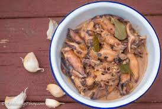

Adobong Pusit sa Gata

Recipe Description
If you love adobo dishes and all the ways you can make it, this is
one adobo recipe you need to learn to cook. It's a squid adobo that's
got gata, or coconut milk.
Make sure to save the ink sac when you prepare your squid, because the powerful
flavor of the squid and its ink is complemented by the adobo seasonings! But
what tempers all of these flavors is the gata or coconut milk. Its creamy flavor
will transform this recipe from an otherwise normal adobong pusit to one that's
more mellow but still flavorful.
Ingredients
- 2 lbs squid
- 4 cloves garlic, peeled and chopped
- 1/2 cup vinegar
- 1/2 cup water
- 1 bay leaf
- salt and pepper to taste
- 1 tablespoon coconut oil
- 1 onion, peeled and sliced thinly
- 1 thumb-sized ginger, peeled and julienned
- 2 large Roma tomatoes, chopped
- 1 tablespoon fish sauce
- 1 cup coconut milk
- 2 Thai chili peppers, stemmed and minced
Steps
- Holding the squid firmly, pull the head from the body including internal parts
and tentacles. Pull out the clear cartilage inside the tube and discard.
- Under cold running water, wash the squid, inside and out, to remove any debris
or excess ink. Drain well and pat till dry.
- In a pot over medium heat, combine squid, 2 cloves of garlic, vinegar, water,
and the bay leaf. Bring to a boil while uncovered without stirring, for about
3 to 5 minutes or just until squid changes color. Remove from heat and drain,
reserving about 1 cup of the liquid.
- In a pot over medium heat, heat oil. Add onions, ginger, the remaining garlic
cloves. Cook until softened.
- Add tomatoes and cook, mashing with the back of a spoon, until softened.
- Add fish sauce and cook for about 1 minute.
- Add coconut milk, reserved liquid, and chili peppers. Bring to a simmer and
continue cook until liquid is reduced and begins to render fat.
- Add squid and cook for about 3 to 5 minutes or until heated throughly.
- Season with salt and pepper to taste. Serve hot.